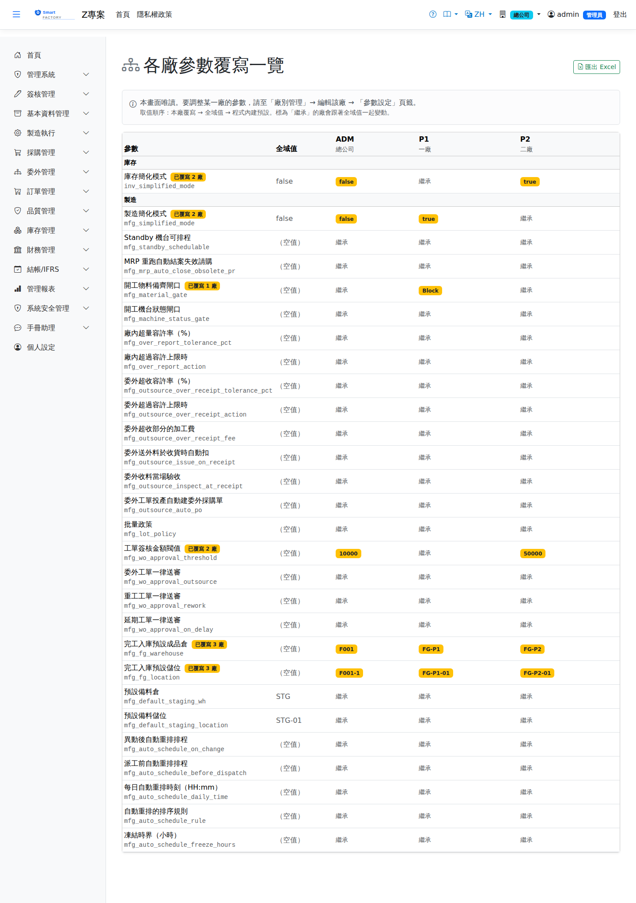

各廠參數覆寫一覽Plant Parameter Overview
系統參數可以逐廠覆寫，但編輯入口是逐廠的（廠別管理 → 編輯 → 參數設定頁籤），所以「這個參數目前有哪幾個廠改過」在原本的動線上看不到——要一廠一廠點開比對。本畫面把同一份參數清單轉置成「參數 × 廠別」矩陣補上這個視角。System parameters can be overridden per plant, but they are edited one plant at a time (Plant Management, Edit, Parameter Settings tab). That makes 「which plants override this parameter」 invisible in the normal flow — you would have to open each plant and compare. This screen transposes the same parameter list into a parameter-by-plant matrix to fill that gap.

查詢Query
本報表沒有查詢條件：參數清單固定 12 筆，廠別數量也是個位數，一次全載即可。開啟畫面就是完整結果。This report has no query criteria. The parameter list is a fixed 12 rows and the number of plants is a single digit, so everything loads at once. Opening the screen is the whole result.
| 條件Criterion | 說明Guide |
|---|---|
| 廠別範圍Plant scope | 不是輸入條件，由登入者的角色決定：角色有廠別指派時只列出被指派的廠；沒有指派限制（例如掛在根組織的管理角色）時列出全部廠別Not an input. It follows the signed-in user's role: if the role has plant assignments, only those plants are listed; if it has no assignment restriction (for example a management role attached to the root organization unit), every plant is listed |
欄位說明Field reference
| 欄位Field | 說明Guide |
|---|---|
| 參數Parameter | 列出 PlantParamCatalog 定義的可廠別化參數（目前 11 個），中文名稱下方的灰字是實際的參數鍵（與資料庫 SystemParams / PlantParams 的 Key 相同）Lists the plant-scopable parameters defined by PlantParamCatalog (currently 11). The grey text under each name is the actual parameter key (identical to the Key column in SystemParams / PlantParams) |
| 已覆寫 N 廠N plant(s) overridden | 黃色標記，出現在參數名稱旁；N＝該參數目前有幾個廠設了自己的值。沒有任何廠覆寫時不顯示Yellow badge next to the parameter name. N is the number of plants that currently set their own value. Hidden when no plant overrides it |
| 全域值Global Value | Core「系統參數」畫面所設的值，也就是所有未覆寫廠別實際生效的值The value set on the Core System Parameters screen — the value every non-overriding plant actually uses |
| 各廠欄位Per-plant columns | 每個廠一欄，欄頭為廠別代碼與名稱。黃色標記＝該廠有覆寫（顯示覆寫值）；灰字「繼承」＝該廠沒有覆寫列，跟著全域值走One column per plant, headed by plant code and name. A yellow badge means the plant overrides the parameter (the override value is shown); grey 「Inherited」 means the plant has no override row and follows the global value |
| （空值）(empty) | 覆寫值或全域值是空字串時顯示。這與「繼承」不同——「（空值）」代表有人刻意把它設成空的Shown when the override or global value is an empty string. This is not the same as 「Inherited」: (empty) means somebody deliberately set it to nothing |
取值口徑How a value is resolved
同一個參數在任一廠的生效值，依下列順序取第一個有結果的：For any plant, the effective value of a parameter is the first of the following that yields a result:
匯出Export
右上角「匯出 Excel」把整張矩陣輸出，欄位順序與畫面相同（參數／模組／全域值／各廠一欄）。需要列印權限。The Export Excel button in the top right writes the whole matrix out with the same column order as the screen (parameter, module, global value, then one column per plant). It requires print permission.
相關畫面Related screens
- 廠別管理（系統管理）——參數的唯一編輯入口，在「參數設定」頁籤Plant Management (System Administration) — the only place to edit these parameters, on the Parameter Settings tab
- 系統參數（系統管理）——設定全域值，影響所有標為「繼承」的廠System Parameters (System Administration) — sets the global value, affecting every plant marked Inherited